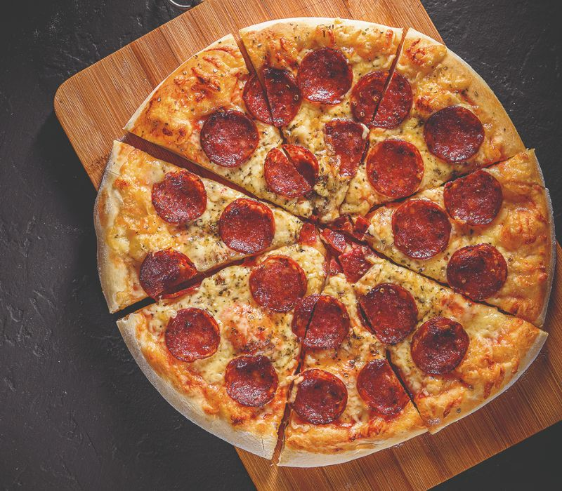

A pizza de calabresa é um clássico que combina sabor intenso com simplicidade. Aprenda a preparar uma pizza deliciosa com ingredientes frescos e um toque especial.

Na Copacabana, nossa pizza de calabresa é feita com massa artesanal, leve e crocante, preparada com ingredientes selecionados para garantir o melhor sabor. Coberta com molho de tomate caseiro, generosas fatias de calabresa suculenta e temperada na medida certa, finalizada com queijo mussarela derretido e um toque especial de cebola fresca. Cada mordida é uma explosão de sabor que combina tradição e qualidade, perfeita para quem aprecia um clássico irresistível.
Wesley alemão
Rapaz, essa receita √© do jeito que eu gosto: simples, saborosa e sem frescura! Já t√¥ separando os ingredientes pra testar e chamar o pessoal aqui em casa. Nada melhor que uma pizza de calabresa bem feita pra acompanhar um bom papo e uma gelada! üçªüî•
Responder
Cremosinho
Agora sim eu entendi o segredo de uma pizza de calabresa perfeita! üçïüíõ Já t√¥ imaginando aquele queijo derretendo, a calabresa bem douradinha e aquele aroma que faz qualquer um salivar. Vou testar hoje e garantir que ningu√©m reclame!
Responder
Roger Guedes
Essa pizza aqui merece respeito! Uma boa calabresa, queijo no ponto e aquele toque de or√©gano pra finalizar. Se der certo, vai ser oficial: toda sexta-feira tem que rolar essa receita em casa! ‚öΩüî•
Responder
Matuê
Pizza tem que ter vibe, e essa de calabresa já ganhou meu cora√ß√£o! Sabor marcante, ingredientes no ponto e um preparo fácil de respeitar. Já t√¥ sentindo que essa vai virar tradi√ß√£o nos encontros com a galera. üé∂üî•
Responder
Raphael Veiga
Pizza de calabresa é clássica, mas quando bem feita, vira experiência! Se essa receita for tão boa quanto parece, já tô preparando o forno e chamando os amigos pra uma noite de pizza e conversa boa. Nada melhor que unir sabor e resenha!
Responder